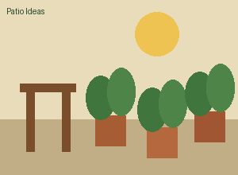

Make Your Patio Come Alive!
Southtown Plant Co. helps San Antonio homeowners choose colorful, easy-care plants for patios, porches and small outdoor spaces.

Plants for South Texas Patios
Start with varieties that tolerate heat, bright light and the occasional forgotten watering day.
RED YUCCA
Architectural foliage and dramatic flower stalks.
Best for: Full sunTEXAS LANTANA
Long-blooming color that attracts butterflies.
Best for: Sun to part sunDICHONDRA
Soft silver-green foliage that trails over pots.
Best for: ContainersOur Services
Patio Plant Planning
Bring us photos, measurements and notes about how much sun your space receives.
We will help you choose plants that fit your space and routine.
Container Refresh
We can help revive existing pots with updated plants, fresh soil and combinations
designed for the season.
About Southtown Plant Co.

We are a neighborhood plant shop focused on patios, porches, courtyards and other compact outdoor spaces.
Our goal is simple: help customers choose fewer plants, choose them well and understand how to keep them thriving.
VISIT THE SHOP
123 Garden Row
San Antonio, TX 78204
(210) 555-0148
HOURS
Tuesday-Saturday: 10 a.m.-6 p.m.
Sunday: 11 a.m.-4 p.m.
Monday: Closed